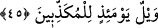
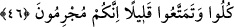

44. İşte, biz iyilik yapanları böyle mükâfatlandırırız.
“İşte Biz” inançlarında
ve
amellerinde
“iyi
hareket
edenleri
böyle
mükâfâtlandırırız.” Ondan daha aşağı bir mükâfât da yoktur.
45. O gün, (hakîkatleri) yalan sayanların vay hâline!
Çünkü düşmanları böylesine bol sevaba ulaştılar. Onlar ise ebedî ve şiddetli bir
azâbın içinde kaldılar.
Kâşifî demiştir ki cehâlet, kötülük ve zem yalancılar içindir, zira onlar cennet
nimetlerine inanmazlar.
et-Te’vilâtü’n-Necmiyye’de bu âyetle ilgili olarak şu satırları okuyoruz: Allah’tan
başkasını bir yana bırakıp sâdece O’ndan korkanlar, bir başka ifâdeyle vahdet nûrundan
sakınıp kesret zulmetinden yüz çevirenler, mârifet nûruyla nekre zulmetinden yüz
çevirenler, ilâhî vasıfların, rabbânî ahlâkın gölgelerinde, ilim ve hikmet sularının
pınarları başında, tecellîyat-ı rûhânî, tenezzülât-ı nûrâniyye’den diledikleri meyveleri
yemektedirler. İşte sizler mevhibel/Hak vergisi yemeklerden âfiyetle yiyiniz. Tevhîdî
içeceklerden âfiyetle içiniz. Çünkü sizler sâlih ameller ve güzel fiiller işlediniz. İşte
Biz Bizim mutlak cemâlimizi müşâhede eden muhsin kullarımızı böyle
mükâfâtlandırırız. O gün mükâfâtı ve mücâzâtı yalan sayanların vay hâline!
46. (Ey inkârcılar!) Yeyiniz, (dünyadan) faydalanınız biraz! Gerçek şu ki, sizler
suçlusunuz!
“Yiyin. Birazcık faydalanın” veya kısa bir süre faydalanın. Bir başka ifâdeyle
ecelinizin sonuna kadar kısa bir süre yaşayın. Çünkü dünya zamanı tıpkı metâı gibi
azdır. “Şüphesiz siz mücrim” azâbı hak etmiş kâfir “lersiniz.”
Doğrusu siz müşriksiniz, âkıbetiniz ise devamlı azaptır. Bu âyet-i kerîmede “yiyin...”
şeklinde başlayıp devam eden bu son cümlenin başında gizli bir “denilir” ifâdesi
vardır.
Kevâşî tefsirinde deniyor ki: Âyetin mânâsı şöyledir; o gün yalan sayanların vay
hâline! Çünkü onlara yiyin, birazcık faydalanın denilecektir. Ve “yiyin, birazcık
faydalanın” ifâdesiyle onların dünyadaki hâlleri kendilerine hatırlatılacak ve dünyada
iken nefisleri açısından ebedî nimeti bir yana bırakarak, dünyanın hemen peşin olarak
elde edilen fânî metaını tercih etmeleri dolayısıyla nefislerine karşı işlemiş oldukları